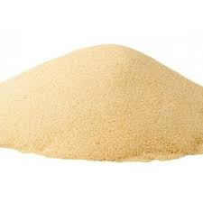

Arial Lima
Arial Lima
Areal Lima, temos a melhor areia da região, do norte de minas
Até onde vamos?
Essa e uma pergunta muito comum entre nossos clientes, pois nós somos uma empresa registrada no interior do norte de minas, e muitos clientes ficam em duvida de até onde entregamos nossa areia, nas cidades de: Montes Claros-MG, Porteirinha-MG, Pirapora-MG, Janauba-MG, Bocaiuva-MG, Nova-Porteirinha-MG, Pai Pedro-MG.Entre outras cidades nessa região.
Tipos de areia
Areia Fina
E um tipo de areia, mais fina que as outras, a areia fina, como o nome sugere, apresenta os menores grãos entre os três tipos, com gramatura entre 0,05 e 0,42 mm. Essa característica a torna ideal para etapas como o reboco, já que oferece um aspecto mais fino e liso, essencial para a posterior aplicação de massa e pintura.
Areia Media
A areia média, por sua vez, é formada por grãos de 0,42 a 2 mm. Ela é usada, principalmente, para o chapisco, etapa que antecede o reboco, e para o preparo da argamassa utilizada para assentar tijolos ou blocos. Além disso, pode ser aplicada no preenchimento de pilares e vigas.
Areia Grossa
A areia grossa, como ja diz seu nome e mais grossa que as outras,a areia grossa apresenta gramatura entre 2 e 4 mm, com os maiores grãos entre as categorias. Essa areia para construção é usada apenas para fazer concreto e contrapiso, justamente por causa do aspecto mais rústico e do menor refinamento que apresenta em comparação às demais.